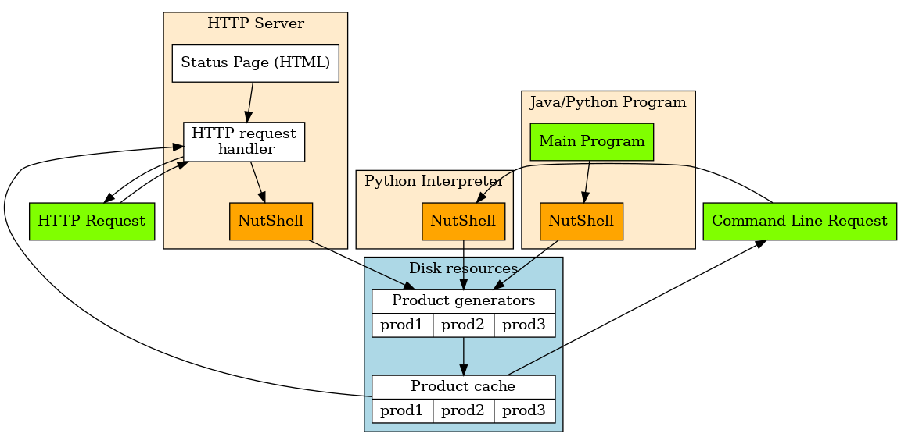

Overall Scheme¶
Three interfaces of using NutShell¶
Product requests can be sent to NutShell in three different ways.
These options are illustrated in the image below.
The simplest way is to use the command line, calling Python module
nutshell.nutshell, giving configuration file and desired product
as parameters:
python3 -m nutshell.nutshell -c demo/nutshell-demo.cnf -p 201708121600_image.pattern_SIZE=100,100.png
--make --product <product>,
--make --product <product>,
Secondly, within a Python program or Python interpreter NutShell can be applied as a library, invoked minimally as follows:
>>> import nutshell.nutshell
>>> server = nutshell.nutshell.ProductServer('nutshell/nutshell.cnf')
>>> response = server.make_request("201708121600_image.pattern_SIZE=100,100.png")
Upon success, response.returncode is nonzero and the generated
or existing product file is available on disk in response.path.
Finally, one my start HTTP server module nutshell.httpd essentially by invoking:
python3 -m nutshell.httpd -c nutshell.cnf
Then, the service is accessible through a URL of type http://<SERVER>:<PORT>/?<REQUESTS> ,
on local host as http://127.0.0.1:8088/nutshell/server for example.
The port can be set in configuration file or on command line.
More details in status-codes
Further, typically services are installed by super-user in system level startup directories – consult your admin for details.
Clicking on this internal hyperlink will take us to the target_ below.
The hyperlink target above points to this paragraph.
- query form
- error messages
- product info
- input info
- server status